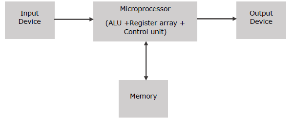

Microprocessor
Microprocessor is a controlling unit of a micro-computer, fabricated on a small chip capable of performing ALU (Arithmetic Logical Unit) operations and communicating with the other devices connected to it.
Microprocessor consists of an ALU, register array, and a control unit. ALU performs arithmetical and logical operations on the data received from the memory or an input device. Register array consists of registers identified by letters like B, C, D, E, H, L and accumulator. The control unit controls the flow of data and instructions within the computer.
Block Diagram of a Basic Microcomputer

How does a Microprocessor works?
The microprocessor follows a sequence: Fetch, Decode, and then Execute.
Initially, the instructions are stored in the memory in a sequential order. The microprocessor fetches those instructions from the memory, then decodes it and executes those instructions till STOP instruction is reached. Later, it sends the result in binary to the output port. Between these processes, the register stores the temporarily data and ALU performs the computing functions.
List of Terms Used in a Microprocessor
- Instruction Set - It is the set of instructions that the microprocessor can understand.
- Bandwidth - It is the number of bits processed in a single instruction.
- Clock Speed - It determines the number of operations per second the processor can perform. It is expressed in megahertz (MHz) or gigahertz (GHz).It is also known as Clock Rate.
- Word Length - It depends upon the width of internal data bus, registers, ALU, etc. An 8-bit microprocessor can process 8-bit data at a time. The word length ranges from 4 bits to 64 bits depending upon the type of the microcomputer.
- Data Types - The microprocessor has multiple data type formats like binary, BCD, ASCII, signed and unsigned numbers.
Features of a Microprocessor
- Cost-effective - The microprocessor chips are available at low prices and results its low cost.
Size - The microprocessor is of small size chip, hence is portable.
- Low Power Consumption - Microprocessors are manufactured by using metaloxide semiconductor technology, which has low power consumption.
- Versatility - The microprocessors are versatile as we can use the same chip in a number of applications by configuring the software program.
- Reliability - The failure rate of an IC in microprocessors is very low, hence it is reliable.